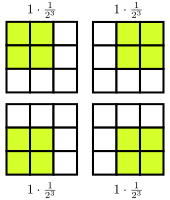
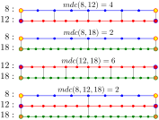

O Princípio da Inclusão-Exclusão é uma ferramenta fundamental da Combinatória, utilizada para realizar a contagem precisa de elementos pertencentes a vários conjuntos. Apresentamos esse princípio combinando teoria e exemplos, com atenção especial à integração de recursos tecnológicos desenvolvidos com o auxílio do SageMath.
Nota1.1.
Usaremos o símbolo \(\#A\) para representar o número de elementos do conjunto \(A\text{,}\) isto é, a cardinalidade de \(A\text{.}\)
Dizemos que dois conjuntos \(A\) e \(B\) são disjuntos quando \(A\cap B=\varnothing\text{.}\)
Subseção1.1O Princípio da Inclusão-Exclusão para 2 e 3 conjuntos
Teorema1.2.
Sejam \(A\) e \(B\) conjuntos finitos, então
\begin{equation*}
\#(A\cup B) = \#A + \# B - \#(A\cap B).
\end{equation*}
Figura1.3.Diagrama de Venn para \((A\cup B)\text{.}\)
Ou seja, a cardinalidade de \(A\cup B\) é igual a cardinalidade de \(A\) mais a cardinalidade de \(B\) menos a cardinalidade de \(A\cap B\text{.}\)
Exemplo1.4.(POTI Nível 3 - modificado).
Um retângulo \(20 \times 32\) é feito de quadrados unitários. Por quantos quadrados unitários a diagonal do retângulo passa?
A diagonal corta cada um dos \(20+32\) quadrados? A resposta é não. De fato, pode ocorrer de haver repetições na "mudança". Veja o seguinte exemplo bidimensional, num retângulo \(6 \times 9\text{.}\)
Note que há três repetições. Opa! \(mdc(6, 9) = 3\) e \((6, 9) = 3 \cdot (2, 3)\text{.}\) O que acontece é que se \(mdc(a, b) = d\text{,}\) ocorrem \(d\) blocos de repetições. Logo, devemos subtrair \(mdc(a, b)\text{.}\) A resposta é \(a + b - mdc(a, b)\text{.}\)
No nosso caso, a resposta é \(20+32-mdc(20,32)=20+32-4 = 48.\)
Tecnologia1.5.
Escolha os valores dos campos, m (número de linhas) e n (número de colunas) para determinar quantos quadrados unitários a diagonal do retângulo passa.
Figura1.8.Diagrama de Venn para \((A\cup B\cup C)\text{.}\)
Exemplo1.9.
(Veja [2.4]) Determine o número de elementos do conjunto:
\begin{equation*}
A = \{ n\in \mathbb{N}~|~ n \text{ é múltiplo de } 6, \text{ ou } 15, \text{ ou } 21 \text{ e } 100\leq n\leq 1000\}.
\end{equation*}
\begin{align*}
A_6 \amp = \{n\in\mathbb{N} \mid 100\leq n\leq 1000 \text{ e } n \text{ é múltiplo de 6}\};\\
A_{15} \amp = \{n\in\mathbb{N} \mid 100\leq n\leq 1000 \text{ e } n \text{ é múltiplo de 15}\};\\
A_{21} \amp = \{n\in\mathbb{N} \mid 100\leq n\leq 1000 \text{ e } n \text{ é múltiplo de 21}\}.
\end{align*}
O número de múltiplos de um número natural \(n\text{,}\) entre 1 e 1000, inclusive, é dado pelo quociente da divisão Euclideana de 1000 por \(n\text{,}\) pois, se \(1000 = n\cdot q + r\text{,}\) com \(0\leq r \lt n\text{,}\) então os números \(1\cdot n, 2\cdot n, \ldots, q\cdot n\) são múltiplos de \(n\) e estão entre 1 e 1000. Porém, no exemplo, a contagem dos múltiplos deve ser entre 100 e 1000, inclusive. Para contornar esta situação, definimos os conjuntos
\begin{align*}
A_6' \amp = \{n\in\mathbb{N} \mid 1\leq n\leq 99 \text{ e } n \text{ é múltiplo de 6}\};\\
A_{15}' \amp = \{n\in\mathbb{N} \mid 1\leq n\leq 99 \text{ e } n \text{ é múltiplo de 15}\};\\
A_{21}' \amp = \{n\in\mathbb{N} \mid 1\leq n\leq 99 \text{ e } n \text{ é múltiplo de 21}\}.
\end{align*}
e os conjuntos
\begin{align*}
A_6'' \amp = \{n\in\mathbb{N} \mid 1\leq n\leq 1000 \text{ e } n \text{ é múltiplo de 6}\};\\
A_{15}'' \amp = \{n\in\mathbb{N} \mid 1\leq n\leq 1000 \text{ e } n \text{ é múltiplo de 15}\};\\
A_{21}'' \amp = \{n\in\mathbb{N} \mid 1\leq n\leq 1000 \text{ e } n \text{ é múltiplo de 21}\}.
\end{align*}
Para o caso das interseções \(A_{n_1}\cap A_{n_2}\cap \cdots \cap A_{n_k}\text{,}\) devemos usar o quociente da divisão Euclideana pelo \(\mathrm{MMC}(n_1, n_2, \ldots, n_k)\text{.}\) Pois, o MMC é o menor múltiplo desses números, por definição. Logo,
Escolha os valores dos campos, Vmin ,Vmax e lista, para determinar a cardinalidade do conjunto abaixo:
\begin{equation*}
C = \{n\in \mathbb{N}~|~ n \text{ é múltiplo de } n_1, \text{ ou } n_2, \text{ ou } \ldots n_k \text{ e } Vmin \leq n\leq Vmax \}.
\end{equation*}
Figura1.11.
Subseção1.2O Princípio da Inclusão-Exclusão para \(n\) conjuntos
Teorema1.12.
Sejam \(A_1,A_2,\cdots,A_n\) conjuntos finitos. A cardinalidade de
Suponha que o elemento \(a\) pertence a exatamente \(r\) (\(1\leq r\leq n\)) dos conjuntos \(A_1, A_2, \ldots, A_n\text{.}\) Será mostrado que \(a\) é contado exatamente uma vez pelo lado direito da Expressão (1.2).
observa-se que \(a\) é contado \(C_r^1=r\) vezes, pois \(a\) pertence a exatamente \(r\) dos conjuntos. No somatório
\begin{equation*}
\sum_{0\lt i \lt j\leq n}\#(A_i\cap A_j),
\end{equation*}
nota-se que \(a\) é contado \(C_r^2\) vezes, pois, em cada termo do somatório, para que \(a\) seja contado, \(a\) precisa pertencer aos dois conjuntos. Se separarmos os \(r\) conjuntos que contém \(a\text{,}\) existem \(C_r^2\) interseções contendo \(a\text{.}\) No caso geral, \(a\) será contado \(C_r^m\) vezes, pelo somatório envolvendo \(m\) dos conjuntos \(A_i, i\in \{1, 2, \ldots, n\}\text{.}\)
Desta forma, o elemento \(a\) será contado exatamente
vezes pelo lado direito de (1.2). Usando a Expansão do Binômio de Newton (veja [cross-reference to target(s) "teo-binomio-newton" missing or not unique]), temos
Isto mostra que o elemento \(a\) é contado exatamente uma vez pelo lado direito de (1.2).
Como o elemento \(a\) é arbitrário e a quantidade \(r\text{,}\) também é arbitrária, esse argumento serve para cada um dos elementos de (1.1), o que prova o teorema.
Exemplo1.13.(POTI Nível 3).
Quantos são os primos menores ou iguais a \(111\text{?}\)
Podemos listar todos os exemplos (não são muitos!), mas vamos mostrar um método que serve no caso geral. Basta eliminar os compostos e o número 1, que não é primo nem composto. Assim, sendo t a quantidade de compostos entre 1 e 111, a resposta é \(111 − 1 − t\text{.}\)
Note que \(10\lt \sqrt{111} \lt 11\text{.}\) Os primos menos que 11 são: \(2,3,5,7\text{.}\) Vamos aplicar o mesmo procedimento do Exemplo 1.9 para descobrir o número de múltiplos desses números.
Figura1.14.
Portanto, a resposta é \(111 - 1 - (85-4) = 29\text{.}\)
Teorema1.15.
Seja \(P\) uma probabilidade sobre \(\Omega\) e sejam A e B eventos, então
\begin{equation*}
P(A\cup B) = P(A)+P(B) - P(A\cap B)\text{.}
\end{equation*}
Exemplo1.16.(OBM).
Um quadrado de lado 3 é dividido em 9 quadrados de lado unitário, formando um quadriculado. Cada quadrado unitário é pintado de azul ou vermelho. Cada cor tem probabilidade 1/2 de ser escolhida e a cor de cada quadrado é escolhida independentemente das demais. Qual a probabilidade de obtermos, após colorirmos todos os quadrados unitários, um quadrado de lado 2 pintado inteiramente de uma mesma cor?
Para o primeiro somatório, temos os 4 casos abaixo. A primeira cor do quadrado pode ser qualquer uma. Depois as outras 3 cores precisam ser iguais a do primeiro quadrado, a probabilidade disto acontecer é \(\frac{1}{2^3}\text{.}\)
Como são 4 termos na soma e todos são iguais, o resultado do primeiro somatório é \(4\cdot \frac{1}{2^3}=\frac{1}{2}\text{.}\)

Figura1.17.
Nas interseções 2 a 2, temos duas situações diferentes, como pode ser visto na figura abaixo. Somando tudo, ficamos com
No primeiro dia de uma competição matemática, vinte pessoas tiraram uma foto em grupo, em fila. No último dia, tiraram outra foto, de modo que todos tinham um novo vizinho à sua direita. De quantas maneiras eles poderiam fazer isso?
Considere o conjunto \(\Omega\) das permutações \((j_1, j_2, \ldots, j_{20})\) do conjunto \(\{1,2,\ldots, 20\}\) e seja \(A_r\) o conjunto destas permutações, na qual, o par \((j_r, j_{r+1})\) é uma sucessão, \(r=1,2,\ldots, 19\text{.}\) O número de fotos possíveis é dado por
Vamos precisar do PIE para calcular \(\#(A_1\cup A_2 \cup \cdots \cup A_{19})\text{.}\)
Observe que \(\#A_r = (20-1)!\text{,}\) para qualquer \(r = 1, 2, \ldots, 19\text{.}\) Pois, olhamos para o par \((j_r, j_{r+1})\) como um elemento e ficamos com um conjunto de \(19\) elementos para contar o número de permutações.
O caso de \(\#(A_r\cap A_s)\text{,}\) vamos separar em duas situações.
(\(r\) e \(l\) não são consecutivos) Neste caso, Olhamos para o par \((j_r, j_{r+1})\) como apenas um elemento e o par \((j_s, j_{s+1})\) como um elemento também, ficamos com \(20-2\) elementos para contar o número de permutações.
(\(r\) e \(s\) são consecutivos) Neste caso olhamos para a tripla \((j_r, j_{r+1}, j_{r+2})\) como apenas um elemento e também ficamos com \(20-2\) elementos para contar o número de permutações.
Nos dois casos o número de permutações é \((20-2)!=18!\text{.}\) E o número de interseções 2 a 2 é \(\binom{19}{2}\)
O caso de \(\#(A_r\cap A_s \cap A_p)\text{,}\) vamos separar em três situações.
(\(r\text{,}\)\(s\) e \(p\) não são consecutivos) Neste caso, Olhamos para os pares \((j_i, j_{i+1})\) como apenas um elemento, ficamos com \(20-3\) elementos para contar o número de permutações.
(\(r\text{,}\)\(s\) e \(p\) apenas dois são consecutivos) Neste caso olhamos para a tripla \((j_r, j_{r+1}, j_{r+2})\) como apenas um elemento e um par \((j_i, j_{i+1})\) como um elementos. Também ficamos com \(20-3\) elementos para contar o número de permutações.
(\(r\text{,}\)\(s\) e \(p\) os três são consecutivos) Neste caso olhamos para a tripla \((j_r, j_{r+1}, j_{r+2},j_{r+3})\) como apenas um elemento. Também ficamos com \(20-3\) elementos para contar o número de permutações.
Nos três casos o número de permutações é \((20-3)!=17!\text{.}\) E o número de interseções 2 a 2 é \(\binom{19}{3}\)
Uma permutação de uma lista de \(n\) elementos é chamada de permutação caótica, quando nenhum dos elementos da permutação está na posição original, ou seja, uma permutação de \(a_1,a_2, ...,a_n\) é chamada de caótica quando nenhum dos \(a'_{i}s\) se encontra na \(i\)-ésima posição.
Notação:
\begin{equation*}
D_n \text{ ou } D(n)
\end{equation*}
Tecnologia1.23.
As permutações caóticas dos elementos \(1, 2, 3, 4\) podem ser geradas no Sage, com o seguinte comando:
Tecnologia1.24.
Todos os anagramas de AMOR, de forma que nenhuma letra fique na posição original. Troque as informações da lista para obter o número de permutações caóticas e as permutações caóticas da sua lista.
Teorema1.25.
A quantidade de permutações caóticas de uma lista com \(n\) objetos distintos, pode ser calculada da seguinte maneira:
Considere todas as permutações dos elementos \(a_1 , a_2 , \ldots , a_n\text{.}\) Indicando por \(A_i\) todas as permutações formadas pelos elementos \(a_1 , a_2 , \ldots , a_n\) com \(a_i\) no \(i\)-ésimo lugar, calcularemos \(D_n\text{:}\)
Visto que existem \(n\) termos no primeiro somatório, \(C_n^2\) termos no segundo, \(C_n^3\) termos no terceiro,\(\cdots\text{,}\)\(C_n^n=1\) no último e
Calculando o número de permutações caóticas no Sage:
Exemplo1.27.
Luiz, Cláudia, Paulo, Rodrigo e Ana brincam entre si de amigo-secreto (ou amigo-oculto). O nome de cada um é escrito em um pedaço de papel, que é colocado em uma urna. Em seguida, cada participante da brincadeira retira da urna um dos pedaços de papel, ao acaso. De quantas formas pode ocorrer a distribuição dos papéis de modo que nenhum dos participantes retire seu próprio nome?
Uma clássica questão de permutação caótica, visto que durante a distribuição dos papéis nenhum dos participantes poderá retirar seu próprio nome. Assim o número de maneiras de ocorrer tal evento, é dado por:
O número de modos de escolher os quatro elementos que ocuparão o seu lugar primitivo é \(C_{10}^4\text{.}\)
Com estes elementos em seus lugares, os outros seis elementos devem ser arrumados de forma caótica. o que pode ser feito de \(D_6\) formas. A resposta é
(Canadá) Seja \(n\) um inteiro positivo, e \(S = {1, 2, \ldots , n}\text{.}\) Mostre que o número de permutações de \(S\) sem pontos fixos e o número de permutações de \(S\) com exatamente um ponto fixo tem diferença exatamente \(1\text{.}\)
\begin{equation*}
D_n - n D_{n-1} = n!\frac{(-1)^n}{n!} =(-1)^n\text{.}
\end{equation*}
Definição1.30.
Sejam \(\Omega\) um conjunto, \(A_1, A_2, \ldots, A_n\) subconjuntos de \(\Omega\text{.}\) Definimos os números \(S_0, S_1, S_2, \ldots, S_n\) da seguinte maneira:
Vamos calcular o número total de permutações e subtrair o número de permutações, na qual, algum número ímpar ocupa a posição original. Seja \(A_i\) o conjunto das permutações, na qual, o número \(i\) ocupa a posição original. Precisamos calcular
Para aplicar o PIE, precisamos calcular os valores de \(S_1, S_2, \ldots, S_5\text{.}\)
Observe que \(\#A_i = 8!\text{,}\) pois o número ímpar \(i\) ocupa sua posição original, os demais podem ocupar qualquer posição. Assim, \(S_1 = 5\cdot 8!\text{,}\) pois são \(5\) números ímpares.
\(\#(A_i\cap A_j) = 7!\text{,}\) pois dois números estão em suas posições originais, os demais podem ocupar qualquer posição. Para calcular \(S_2\text{,}\) basta multiplicar o valor pelo número de maneiras de escolher os dois números ímpares, ou seja, \(S_2 = \binom{5}{2}7!\)
Seguindo com o mesmo raciocínio, obtemos \(S_3 = \binom{5}{3}6!, S_4 = \binom{5}{4}5!\) e \(S_5 = \binom{5}{5}4!\)
Vamos contar o total de permutações e subtrair o número de permutações que possuem alguma letra na posição original. O total de permutações é \(PR_5^2 = \frac{5!}{2!} = 60.\) A resposta será dada por
Na qual, o conjunto \(A_I\) é o conjunto das permutações com a letra \(I\) na posição original.
Neste caso, vamos contar separadamente o número de permutações que tem alguma letra na posição original. Primeiro vamos contar 1 a 1, ou seja, fixamos a letra na posição original e calculamos o número de permutações das outras letras:
S: \(PR_4^2 = 12\)
A: \(P_4 = 24\)
G: \(PR_4^2 = 12\)
A: \(P_4 = 24\)
Z: \(PR_4^2 = 12\)
Assim, \(S_1 = 84.\)
Interseções 2 a 2, fixamos as letras nas posições originais e calculamos o número de permutações das outras letras:
(Veja [2.2]) Qual o número de permutações de \((1,2,3,4)\text{,}\) na qual, o número \(1\) não pode ocupar o segundo lugar, o número \(2\) não pode ocupar o quarto lugar e o número \(3\) não pode ocupar nem o primeiro nem o quarto lugar?
Observe que \(\Omega\) é o conjunto dos números inteiros entre 100 e 1000 inclusive. Portanto, \(S_0 = \#\Omega = 1000-100+1 = 901.\) Utilizando as informações da solução do Exemplo \ref{exe_01}, temos:
\(\displaystyle S_0 = 901;\)
\(\displaystyle S_1 = 150+60+43 = 253;\)
\(\displaystyle S_2 = 30+21+9 = 60;\)
\(\displaystyle S_3 = 4.\)
Agora, basta aplicar os itens \(a.\) e \(b.\) do Teorema \ref{teo_fim} para obtermos as respostas dos itens \(a.\) e \(b.\text{,}\) respectivamente.
Escolha os valores dos campos, Vmin ,Vmax, lista e p, para determinar os valores de \(S_i\text{,}\)\(a_p\text{,}\)\(b_p\) e a cardinalidade do conjunto \(C\text{,}\) definido abaixo:
\begin{equation*}
C = \{n\in \mathbb{N}~|~ n \text{ é múltiplo de } n_1, \text{ ou } n_2, \text{ ou } \ldots n_k \text{ e } Vmin \leq n\leq Vmax \}.
\end{equation*}
Figura1.38.
Exercícios1.5Exercícios
1.
Considere os conjuntos
\begin{equation*}
\displaystyle B = \{ b\in \mathbb{N}~|~ b \text{ é múltiplo de } 2, \text{ ou } 3, \text{ ou } 15 \text{ e } 100\leq b\leq 1000\}
\end{equation*}
e
\begin{equation*}
\displaystyle B' = \{ b\in \mathbb{N}~|~ b \text{ é múltiplo de } 2, \text{ ou } 3, \text{ ou } 15 \text{ e } 1\leq b\leq 901\}.
\end{equation*}
Os conjuntos \(B\) e \(B'\) possuem a mesma cardinalidade?
\begin{align*}
A_1, ~\amp \text{o conjunto dos anagramas de PETELECOS que tem P em 1º lugar}; \\
A_2, ~\amp \text{o conjunto dos anagramas de PETELECOS que tem E em 2º lugar}; \\
A_3, ~\amp \text{o conjunto dos anagramas de PETELECOS que tem T em 3º lugar}.
\end{align*}
Queremos calcular \(\#(A_1\cup A_2\cup A_3)\text{.}\) Note que \(\#A_1=\#A_3=PR_8^3\text{,}\) pois são as quantidades de anagramas da palavra PETELECOS com a letra P na primeira posição, para \(\#A_1\text{,}\) e com a letra T na terceira posição, para \(\#A_3\text{.}\) Note também que \(\#A_2 = PR_8^2\text{.}\)
Agora, vamos calcular as cardinalidades das interseções \(A_i\cap A_j\text{,}\) com \(1\leq i\lt j\leq 3\text{.}\)
\(A_1\cap A_2= PR_7^2\text{,}\) pois P e E ficam fixados;
\(A_1\cap A_3= PR_7^3\text{,}\) pois P e T ficam fixados;
\(A_2\cap A_3= PR_7^2\text{,}\) pois E e T ficam fixados.
Finalmente, \(\#(A_1\cap A_2\cap A_3) = PR_6^2\text{.}\) Aplicando o Princípio da Inclusão-Exclusão:
Sejam \(\mathcal{P}, \mathcal{R}\) e \(\mathcal{I}\) os conjuntos dos anagramas da palavra PRINCIPIO que possuem a letra P em primeiro lugar, a letra R em segundo lugar e a letra I em terceiro lugar, respectivamente.
Quantos são os anagramas de PRINCIPIO que estão em exatamente um dos conjuntos \(\mathcal{P}, \mathcal{R}\) e \(\mathcal{I}\text{?}\)
Quantos são os anagramas de PRINCIPIO que estão em pelo menos um dos conjuntos \(\mathcal{P}, \mathcal{R}\) e \(\mathcal{I}\text{?}\)
De acordo com a 1.35, a resposta do item a) é o valor de \(a_1\) e o do item b) é o valor de \(b_1\text{.}\) Note que o número total de anagramas da palavra PRINCIPIO é \(PR_{9}^{3,2}=30240\text{,}\) que o valor de \(S_0\text{.}\) Para calcular os valores de \(S_1, S_2, S_3\) e \(S_4\text{,}\) precisamos dos seguintes valores:
\(\displaystyle \#A_1 = 6720\)
\(\displaystyle \#A_2 = 3360\)
\(\displaystyle \#A_3 = 10080\)
\(\displaystyle \#A_1\cap A_2 = 840\)
\(\displaystyle \#A_1\cap A_3 = 2520\)
\(\displaystyle \#A_2\cap A_3 = 1260\)
\(\displaystyle \#A_1\cap A_2\cap A_3 = 360\)
Portanto,
\(\displaystyle S_0 = 30240\)
\(\displaystyle S_1 = 20160\)
\(\displaystyle S_2 = 4620\)
\(\displaystyle S_3 = 360\)
Aplicando a 1.35, obtemos as respostas dos itens a) e b)
(OBM 2011 - 1ª fase do nível 3) Três polı́gonos regulares, de 8, 12 e 18 lados respectivamente, estão inscritos em uma mesma circunferência e têm um vértice em comum. Os vértices dos três polı́gonos são marcados na circunferência. Quantos vértices distintos foram marcados?
Sendo \(A_k\) a quantidade de pontos do polı́gono de \(k\) vértices, queremos calcular \(\#(A_8 \cup A_{12} \cup A_{18})\text{.}\) Note que \(\#(A_{i_1} \cap A_{i_2} \cap\ldots \cap A_{i_n}) = mdc(i_1 , i_2 , \ldots , i_n)\text{.}\)
Sejam \(A_k\text{,}\)\(k = 8, 12, 18\text{,}\) os conjuntos dos vértices dos polígonos com 8, 12 e 18 lados, respectivamente. Queremos calcular \(\#(A_8\cup A_{12}\cup A_{18})\text{.}\) Pelo Princípio da Inclusão-Exclusão, temos
Como \(\#A_k = k\text{,}\) para concluir o cálculo, precisamos descobrir a cardinalidade de cada interseção.
Usando a figura abaixo como referência, se expandirmos os polígonos até a circunferência, estaremos de acordo com o enunciado. O vértice em comum aos três polígonos foi desenhado no ponto extremo superior, sem perda de generalidade, pois independente de onde ele esteja, os polígonos podem ser girados para ficarem desta forma.
Figura1.39.Polígonos encolhidos.
Considere os semicírculos que partem do extremo superior no sentido horário, até o vértice seguinte de \(A_k\) e assim sucessivamente, de um vértice de \(A_k\) até o seguinte. Desta forma cada conjunto \(A_k\) define \(k\) semicírculos. Teremos a interseção de dois ou três vértices quando a respectiva quantidade de extremidades dos semicírculos coincidirem. Portanto, usaremos o máximo divisor comum para calcular a quantidade de interseções dos vértices. Assim, \(\#(A_i\cap A_j) = \text{mdc}(i, j)\text{,}\) para \(i, j \in \{8, 12, 18\}\text{,}\) com \(i\neq j\) e \(\#(A_8\cap A_{12} \cap A_{18}) = \text{mdc}(8, 12, 18)\text{.}\) Logo,
Na figura abaixo, podemos imaginar que os polígonos foram "cortados" e esticados para podermos visualizar as interseções dos vértices de acordo com os valores dos mdcs.

Figura1.40.Verificação das interseções.
7.
Quantos são os inteiros de \(n\) dígitos, que têm todos os dígitos pertencentes ao conjunto \(\{1, 2, 3\}\text{?}\) Em quantos deles os inteiros \(1, 2\) e \(3\) figuram todos?
item a) Temos 3 opções para o primeiro dígito, 3 opções para o segundo dígito e assim sucessivamente, até o \(n\)-ésimo dígito que também temos 3 opções. Portanto a resposta é \(\underbrace{3\times \cdots \times 3}_{n\text{ parcelas}} = 3^n\text{.}\)
item b) Agora precisamos subtrair de \(3^n\) a quantidade de números de \(n\) dígitos, na qual, nem todos os três dígitos disponíveis aparecem. Defina \(A_1\) como o subconjunto dos números de \(n\) dígitos formados pelos dígitos \(1, 2\) e \(3\) tal que o dígito \(1\) não aparece. De maneira análoga defina os subconjuntos \(A_2\) e \(A_3\text{.}\) Desta forma, queremos calcular
\(A_1\) possui \(2^n\) elementos, pois o dígito \(1\) não pode figurar no número de \(n\) dígitos, sobrando apenas os dígitos \(2\) e \(3\text{.}\) Desta forma, temos duas opções para o primeiro dígito, 2 opções para o segundo dígito e assim sucessivamente. Observe que os conjuntos \(A_2\) e \(A_3\) possuem a mesma quantidade de elementos.
\(A_1\cap A_2\) possui apenas \(1\) elemento, pois os dígitos \(1\) e \(2\) não podem figurar, sobrando apenas o dígito 3. Desta forma temos apenas uma opções para o primeiro dígito, uma opção para o segundo dígito e assim sucessivamente. De maneira análoga observamos que \(A_1\cap A_2\) e \(A_2\cap A_3\) também possuem apenas um elemento.
Finalmente, \(A_1\cap A_2\cap A_3\) não possui elementos, pois nenhum dos três dígitos podem figurar. Portanto a resposta é
Note que, no total, exitem \(m^n\) funções \(f:A\rightarrow B\text{,}\) pois existem \(m\) maneiras de escolher a imagem de cada um dos \(n\) elementos de \(A\text{.}\)
Sejam \(y_1, y_2, \ldots, y_m\) os elementos do conjunto \(B\text{.}\) Defina \(F_j\) o conjunto das funções \(f_{j,l}:A\rightarrow B\text{,}\) tais que \(y_j\) não pertence a imagem de \(f_{j,l}\text{.}\) Logo, \(j\in \{1, 2, \ldots, m\}\) e \(l\in \{1, 2, \ldots, (m-1)^n\}\text{,}\) ou seja, o total de funções deste tipo é \((m-1)^n\text{.}\)
As funções que não são sobrejetivas são as que pertencem a
Para usar o Princípio da Inclusão-Exclusão, precisamos calcular a cardinalidade dos conjuntos \(F_j\text{,}\) a cardinalidade das interseções \(p\) a \(p\) desses conjuntos, com \(2\leq p \leq m\) e a quantidade de interseções \(p\) a \(p\) desses conjuntos:
Para o caso de apenas um conjunto, já sabemos que \(\#F_j=(m-1)^n\) e no total existem \(m\) conjuntos;
Para o caso das interseções de dois conjuntos, temos \(\#(F_{j_1}\cap F_{j_2})=(m-2)^n\) e no total existem \(C_m^2\) dessas interseções;
Para o caso das interseções de \(p\) conjuntos, temos \(\#(F_{j_1}\cap\cdots\cap F_{j_p})=(m-p)^n\) e no total existem \(C_m^p\) dessas interseções.
Aplicando o Princípio da Inclusão-Exclusão, a resposta é
(OMU 2024 - Prova Individual - Item b) Andrês decidiu visitar um museu com \(n\) exposições. Andrês e Marcelo são rivais. De quantas maneiras Andrês e Marcelo podem visitar exposições, de modo que eles nunca visitem uma mesma exposição, mas cada um visite pelo menos uma?
Considere que as exposições do museu estão numeradas de \(1\) até \(n\text{.}\) Podemos representar cada maneira de visitar o museu com uma \(n\)-úpla. Usando \(A, M\) e \(N\) como entradas da \(n\)-úpla, para indicar que Andrês, Marcelo e Nenhum deles, respectivamente, visitou a \(i\)-ésima exposição.
Podemos formar um total de \(3^n\)\(n\)-úplas dessa maneira. Depois, precisamos excluir as que não possuem o símbolo \(A\) ou que não possuem o símbolo \(M\text{.}\) Note que podem ser formadas \(2^n\)\(n\)-úplas com apenas os símbolos \(M\) e \(N\) (sem o símbolo A) e também podem ser formadas \(2^n\)\(n\)-úplas com apenas os símbolos \(A\) e \(N\) (sem o símbolo M). E pode ser formada somente 1 \(n\)-úpla com apenas o símbolo \(N\text{.}\)
Portanto, o número de maneiras de visitar o museu é \(3^n - 2^{n+1} + 1\text{.}\)
10.
(IME) Cinco equipes concorrem numa competição automobilı́stica, em que cada equipe possui dois carros. Para a largada são formadas duas colunas de carros lado a lado, de tal forma que cada carro da coluna da direita tenha ao seu lado, na coluna da esquerda, um carro de outra equipe. Determine o número de formações possı́veis para a largada.
Inicialmente, temos 10! possibilidades de colocarmos esses 10 veículos na posição de largada. Dessas permutações, vamos excluir aquelas que possuem uma equipe com dois carros lado a lado. Para isso, existem \(C_5^1\) maneiras de escolhermos essa equipe que poderá ser colocada em uma das 5 filas na largada \((1^{a}, 2^{a}, 3^{a}, 4^{a} \ ou \ 5^{a})\text{.}\) Devemos, ainda, permutar os carros de uma mesma equipe 2! e os demais 8 carros podem ser organizados de 8!. Assim, temos \(C_5^1\times 5\times 2!\times 8!\) formas distintas de organizarmos esses carros.
Algumas dessas maneiras de organizar os carros apresentam mais de uma equipe com seus carros emparelhados.
Agora, calcularemos em quantos casos teremos ao menos 2 equipes com seus carros emparelhados. Primeiramente, temos \(C_5^2\) formas de escolhermos essas 2 equipes e podemos colocá-las de \(5\times4\) maneiras diferentes nas 5 filas da largada (a primeira equipe pode entrar em qualquer uma das 5 filas e a segunda em uma das outras 4 que restaram). Mas, ainda, devemos permutar os carros das duas equipes lado a lado \(2!\times2\) e das demais \(6\) equipes \(6!\text{.}\)
Seguindo essa linha de raciocínio, pelo Princípio da Inclusão-Exclusão temos
Considere uma urna contendo \(7\) bolas numeradas de \(1\) a \(7\) e assuma que as bolas são retiradas uma após a outra, sem reposição. Esta série de sorteios é encerrada com a ocorrência da primeira coincidência, ou seja, a bola número \(k\) é sorteada na \(k\)-ésima retirada. Calcule o número de séries de sorteios com uma duração dada de \(4\) retiradas.
Considere seis representantes participando de uma conferência em mesa redonda programada para continuar por vários dias. Decide-se que, a cada dia, eles se sentarão ao redor da mesa de modo que cada um tenha à sua direita uma pessoa diferente. A conferência pode durar no máximo quantos dias para que isso seja possível?
(OBM 2019 - Nível Universitário 2ª Fase Q6 - Modificado) Um grupo de \(8\) pessoas fará um amigo oculto e o sorteio dos nomes deverá satisfazer duas condições:
Ninguém pode tirar o próprio nome;
Não podem existir duas pessoas \(A\) e \(B\) tais que \(A\) tirou \(B\) e \(B\) tirou \(A\text{.}\)
De quantas maneiras poderá ser realizado o sorteio?
Denote as \(n\) pessoas por \(P_1, P_2, \ldots, P_n\text{.}\) Sejam \(A_{ij}\text{,}\) com \(1\leq i\lt j\leq n\text{,}\) os conjuntos das permutações caóticas em que a pessoa \(P_i\) tirou a pessoa \(P_j\) e a pessoa \(P_j\) tirou a pessoa \(P_i\text{.}\) A resposta deste problema é dada por
Para obter este valor, usaremos o Princípio da Inclusão-Exclusão.
Observe que \(A_{ij}\) possui a mesma cardinalidade, independetemente dos valores dos índices, assim como \(A_{ij}\cap A_{kl}\) também possui a mesma cardinalidade, independentemente dos índices, e assim por diante. Então, para usar o Princípio da Inclusão-Exclusão, precisamos calcular essas cardinalidades e as quantidades dos conjuntos \(A_{ij}\text{,}\) das interseções duas a duas, três a três e assim por diante. Sem perda de generalidade, vamos fixar os índices:
\(\#A_{12}=D_{n-2}\) e no total são \(C_n^2\) conjuntos deste tipo, pois para formar um conjunto \(A_{ij}\text{,}\) precisamos escolher duas pessoas de \(n\) disponíveis.
\(\#(A_{12}\cap A_{34})=D_{n-4}\) e no total são \(C_n^2C_{n-2}^2\) conjuntos deste tipo, pois para formar uma interseção \(A_{ij}\cap A_{ls}\text{,}\) precisamos escolher duas pessoas de \(n\) disponíveis e depois mais duas de \(n-2\) disponíveis.
A cardinalidade da interseção de \(k\) conjuntos é \(D_{n-2k}\) e no total são \(C_n^2C_{n-2}^2\cdots C_{n-2k}^2\) conjuntos deste tipo, pois para formar uma interseção de \(k\) conjuntos, precisamos escolher duas pessoas de \(n\) disponíveis e depois mais duas de \(n-2\) disponíveis e assim por diante, até que precisamos escolher duas pessoas de \(n-2k\) disponíveis.
Utilizando essas informações na Expressão (1.6), obtemos
(OBM 2019 - Nível Universitário 2ª Fase Q6 - Modificado) Um grupo de \(n\) pessoas fará um amigo oculto e o sorteio dos nomes deverá satisfazer duas condições:
Ninguém pode tirar o próprio nome;
Não podem existir duas pessoas \(A\) e \(B\) tais que \(A\) tirou \(B\) e \(B\) tirou \(A\text{.}\)
De quantas maneiras poderá ser realizado o sorteio?
Denote as \(n\) pessoas por \(P_1, P_2, \ldots, P_n\text{.}\) Sejam \(A_{ij}\text{,}\) com \(1\leq i\lt j\leq n\text{,}\) os conjuntos das permutações caóticas em que a pessoa \(P_i\) tirou a pessoa \(P_j\) e a pessoa \(P_j\) tirou a pessoa \(P_i\text{.}\) A resposta deste problema é dada por
Para obter este valor, usaremos o Princípio da Inclusão-Exclusão.
Observe que \(A_{ij}\) possui a mesma cardinalidade, independetemente dos valores dos índices, assim como \(A_{ij}\cap A_{kl}\) também possui a mesma cardinalidade, independentemente dos índices, e assim por diante. Então, para usar o Princípio da Inclusão-Exclusão, precisamos calcular essas cardinalidades e as quantidades dos conjuntos \(A_{ij}\text{,}\) das interseções duas a duas, três a três e assim por diante. Sem perda de generalidade, vamos fixar os índices:
\(\#A_{12}=D_{n-2}\) e no total são \(C_n^2\) conjuntos deste tipo, pois para formar um conjunto \(A_{ij}\text{,}\) precisamos escolher duas pessoas de \(n\) disponíveis.
\(\#(A_{12}\cap A_{34})=D_{n-4}\) e no total são \(C_n^2C_{n-2}^2\) conjuntos deste tipo, pois para formar uma interseção \(A_{ij}\cap A_{ls}\text{,}\) precisamos escolher duas pessoas de \(n\) disponíveis e depois mais duas de \(n-2\) disponíveis.
A cardinalidade da interseção de \(k\) conjuntos é \(D_{n-2k}\) e no total são \(C_n^2C_{n-2}^2\cdots C_{n-2k}^2\) conjuntos deste tipo, pois para formar uma interseção de \(k\) conjuntos, precisamos escolher duas pessoas de \(n\) disponíveis e depois mais duas de \(n-2\) disponíveis e assim por diante, até que precisamos escolher duas pessoas de \(n-2k\) disponíveis.
Antes de escrever o resultado da Expressão (1.6) vamos obter uma expressão para \(C_n^2C_{n-2}^2\cdots C_{n-2k}^2\text{.}\)
Seja \((j_1, j_2, \dots, j_n)\) uma permutação do conjunto \(\{1, 2, \dots, n\}\text{.}\) Se
\begin{equation*}
j_{r+1} = j_r + 1, \quad 1 \le r \le n - 1,
\end{equation*}
então o par \((j_r, j_{r+1})\) é chamado de uma sucessão da permutação.
Exemplo:
Considere as permutações \((j_1, j_2, j_3, j_4)\) do conjunto \(\{1, 2, 3, 4\}\text{.}\) Estas 24 permutações podem ser classificadas de acordo com suas sucessões da seguinte forma:
As permutações sem nenhuma sucessão são as seguintes 11: